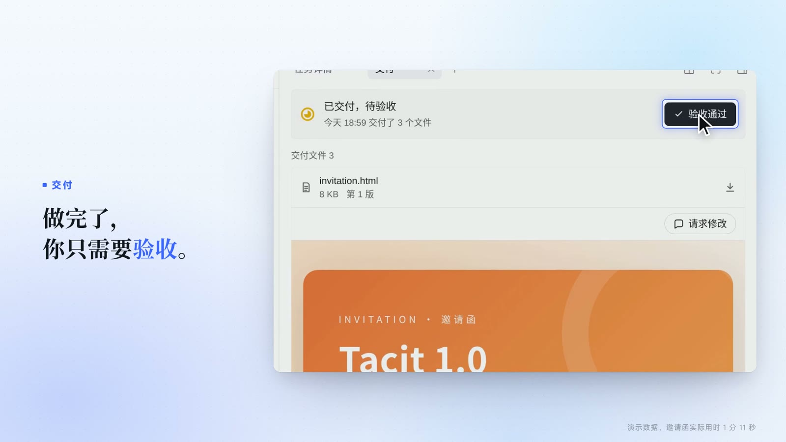

一个真正好的 agent 产品，不需要 agent 这层抽象
Tacit 1.0 今天开源。这篇讲我为什么这么做。
大多数 agent 产品，先让你认识 agent。给它起名字，选头像，配技能，再把它拉进一个群。
我的看法不同。
我觉得用的人要的是把事情做完。agent 是谁、有几个、怎么分工，是系统自己该处理的细节，不该摆到人面前。所以在 Tacit 里，你看不到 agent 这一层：没有花名册，没有角色，没有要你配的插件和技能。你看到的只有项目、任务，和一块叫「待你决定」的看板。
别家把什么摆在你面前
先看这一年的产品，各自选了什么抽象。
| 产品 | 摆在你面前的抽象 | 你要管的 |
|---|---|---|
| Raft、Multica、Claude Code Agent Teams | agent 是队友：有名字、身份、记忆和自己的收件箱 | 起名、配技能、看谁卡住了 |
| Manus Cue | 每个 agent 有自己的邮箱、电话和钱包 | 一支要带的团队 |
| Claude Code、Kimi Code、Codex | 一个主 agent，加一次性的子 agent | 把任务说全，等它汇总 |
| Manus Wide Research、Kimi Agent Swarm | 一个总指挥，加几百个分身 | 一次一个问题 |
| Genspark、Cursor 2.0 | 同一件事，几个模型各做一遍 | 挑模型，挑结果 |
| OpenClaw、OpenHuman、ChatGPT Pulse | 一个一直在的助理 | 一段越来越长的对话 |
| dsh-superagent | 工单和一块面板，会话完全藏起来 | 只看面板 |
Raft 说得最直接：agent 是一等公民，是队友。我理解这个方向为什么吸引人，它直观。但 agent 越像人，你就越像一个经理：谁在做什么，谁卡住了，一件事做到哪了，都要去对应的对话里翻。
最后一行走的是反方向，也是我最认同的：会话应该是实现细节，人只面对事。它服务的是一个团队和一个代码仓库。我想给一个人，和他手上的很多个项目，做同样的事。
我一开始也不是这么想的。我也给每个助理起过名字、配过头像、写过人设。做了几个月才发现，用的人一样都不关心。他们只问两件事：那件事做到哪了，现在是不是该我了。
把 agent 拿掉之后
你只说目标。我说了一句：下周四发布 Tacit 1.0，做邀请函，再写媒体问答、口号和新闻稿，口号用中文还是英文，开工前先问我。它开了两个任务，同时开工。口号那件没有开，先回来问我。我没有选谁来做，到现在也不知道是「谁」做的。

背景不用你讲。今天用 agent，大部分时间其实花在喂背景上：复制一段群聊，贴一个文件，解释一遍昨天做到哪。Tacit 把你屏幕上、飞书里正在发生的事记下来，每 10 分钟整理成你在做的几件事，按项目归好，每件都指得回原始记录。


该你的时候，它来找你。事情并行跑起来，最难的是看不过来。「待你决定」只列需要你的：等你拍板的，等你验收的，出了错的，还有别人在等你回的消息。卡片上没有按钮。点一下，一句话写进输入框，你改完再发。

做完了，你只需要验收。交到你面前的是成品，网页直接打开，文档直接排好。只有你点了验收，一件事才算做完，助理不能替你说「完成了」。


同样的话不用说第二遍。同一个问题你在交付后说了三次，夜里它自己起草一版新的做事说明，早上问你用不用。
技术上，这件事的本质是组织上下文
把 agent 这层拿掉，底下并没有变简单。要做好的只有一件事：把上下文组织好。
我翻过八个开源多 agent 项目的源码，也拆过六七个产品，结论很一致：没有哪个项目在共享上下文窗口。子 agent 拿到的是父 agent 写的一段说明，交回来的是最后一条消息。所谓多 agent，拆开看是三个问题：一份上下文怎么切，切多少给下一个窗口，结果怎么收回来。这就是 fork。
所以功夫花在这几处。
会话按事切，不按人切。同一件事续接同一个会话，换一件事就开新的。开几个会话、用哪个模型、在哪里跑，是系统的事。你面对的任务页上只有人看得懂的东西：背景，你的原话，怎么算完成，产出，进展。

去程，每件事拿一份正好够用的。别家的经验是，任务说明写得怎么样，上下文就传得怎么样，而转述最容易失真。所以你的原话由服务端逐字带给执行者。助理只加一句说明，它补充的内容另外标出来，不算你的要求。大的材料放在项目共享文件里，只给路径。
回程，结果落在事上。交付、提问、失败都记在任务上，状态跟着事走，不跟着会话走。所以执行的那一层可以整个换掉：今天是 DeepSeek Harness 里的一个会话，你可以在任务里换成 Claude Code 或 Codex，你看到的东西不变。
窗口里只放用得上的。记忆和时间线不会整段塞进去，模型只取和这件事有关的那一段，每条都带出处。上下文太长，模型会变糊涂，「多」必须配合整理。
确定的判断交给代码。谁的话算授权，这句引文在不在原消息里，同一件事是不是提过两次，由代码核对，模型只做理解。屏幕和消息里出现的任何要求，都只当资料，不当指令。只有你的原话能算拍板和验收。
这些细节，用的人一样都不用知道。这就是我说的不需要 agent 这层抽象：复杂的东西还在，它贴着真实的任务组织起来，藏在了事情后面。
留下来的是上下文
agent 会越来越强，也越来越便宜。留下来、越积越多的是上下文：你说过的话，拍过的板，验收过的东西。

如果你觉得用 AI 就是带一支 AI 团队，Tacit 会让你有点意外。这里没有团队要带。
只说目标，只管拍板。
Tacit 是 DeepSeek Harness 的一个开源插件，代码在 github.com/DKKD13/tacit-dsh。各家怎么传上下文的源码级拆解，在另一篇里。文中配图取自演示片：界面是真实的，数据是演示用的，标了「示意动画」的那张是画的。